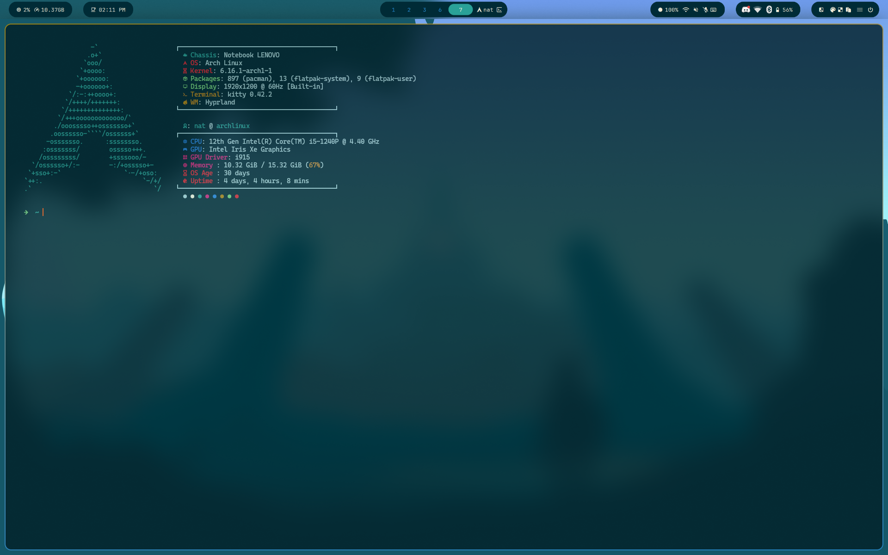
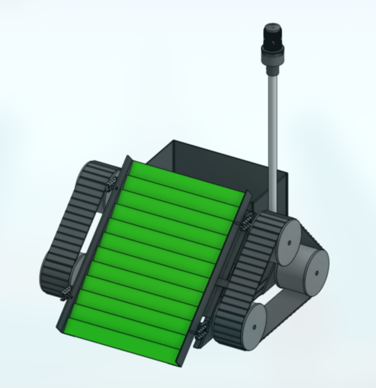

Mini Projects

Strengths Lab Balista
Project for my MECE 204 Strength Lab
I worked with a group of three other engineers to design a small 3D printed pumpkin launching device.
Using priore knowledge we decided to use a ballista design.
We did extensive strength analysis on all aspects of the balista.
I was responsible for all 3D printing, prepping the baslista for launch, and assisted extensily with the CAD design.
No part of the balista broke even when subjected to over 100-lbs for force.
Our design was top 3 in all sections of the class for both range and strength to weight ratio.
Photo 1) Second iteration of the Balista
Photo 2) First iteration of the Balista
Photo 3) Assembly drawing

Snake in Terminal
As part of an effort to learn more c++ and to get more confortable using Unix Terminals, I decided to code the game snake from the ground up.
I used limited resources, only looked at ansi escape codes, terminal flags, and c++ documentation.
Photo 1) Intro Sequence
Photo 2) Gameplay

Arch Linux
I recently switched to a different laptop, and decided that it would be a good opportunity to switch operating systems.
I decided to to try Arch Linux because its incredible customization would grant me a greater understanding of the inner workings of operating systems, reduce bloatware, streamline my workflow, and give me an opportunity to learn unix cli syntax.
While not exactly a mini project, with the amount of time that I have spent configuring my system it requires some notice.
Photo 1) Terminal with Fastfetch
Photo 2) Hyprland Desktop

Lunar Lander (MECE 117)
Final project from my MECE 117 programming for engineers class.
We were tasked with writing a simple lunar lander game in MATLAB. My game features custom terrain generation and unique graphics.
Photo 1) Gameplay
Photo 2) Landed Screen

Chime Machine (MECE 104)
Final project for MECE 104, engineering design tools.
Tasked with designing a machine to play a selected song with chimes using limited resources.
Our design featured two seperate playing mechanisms: a cart with solenoids that was suspended over the chimes and cam driven "hammers"
I was responsible for design and construction of the frame and writing all of the code.
Photo 1) Final Chime Machine
Photo 2) Chime Machine Frame

Sandy the Beach Cleanup Robot
Challenged with designing a robot to help the environment using COTS and vex materials. My robotics team and I decided to focus on beach trash. Beach cleanliness significantly impacts local wildlife and can introduce large quantities of trash into the oceans. I focused on designing the sifting mechanism and the removable trash bin
Photo 1) CAD view 1
Photo 2) CAD view 2